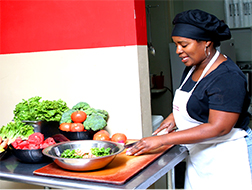
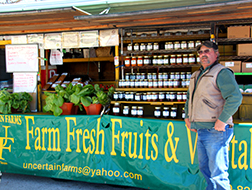
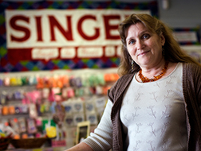
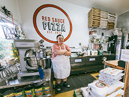
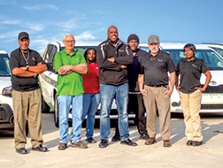
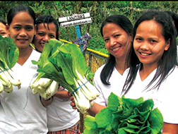
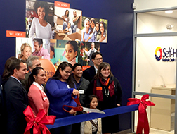

Since our investment activity began in 2011, we have been steadily growing our investment portfolio each year. By 2026, SCF will have a portfolio of 11 investments worth $6 million.
Atlanta Neighborhood Development Partners
ANDP Loan Fund
Loans to support traditionally undercapitalized developers to build affordable housing in Atlanta, Georgia.
Status: Active
# of Investments: 1
Investment Term: 2024 – 2030
Loan Amount: $600,000
Area Served: Atlanta, Georgia
This investment provides capital for affordable housing development loans in the Atlanta region, with a focus on supporting under-resourced developers. SCF’s loan supports ANDP’s bridge, predevelopment, and construction financing to local nonprofit and for-profit affordable housing developers.
BCL of Texas
Diversity Fund
Loans in Texas for undercapitalized entrepreneurs, underwritten using flexible criteria.
Status: Active
# of Investments: 2
Investment Term: 2018-2026
Loan Amount: $350,000-$500,000
Area Served: Texas
This program targets growth businesses in Texas operated by women and minorities by utilizing flexible underwriting criteria and intensive technical assistance. SCF has targeted a portion of its funds to BCL’s “Tranche 1” businesses, which typically are newer enterprises. BCL is headquartered in Dallas with an office in Austin and serves all of Texas.
Blue Highway Capital
Blue Highway Growth Capital Fund
Supports the expansion of small, rural businesses lacking access to growth capital through equity investments.
Status: Active
# of Investments: 1
Investment Term: 2018-2029
Loan Amount: $400,000
Area Served: National; focus on the Northeast
This private equity fund invests in growth-stage, privately held companies located in rural and other underserved sectors of the US, with a focus on the Northeast and Mid-Atlantic. It is the first fund for Blue Highway Capital, a women-led partnership.
Business Consortium Fund
Small Business Loan Fund
Loans to support historically underserved B2B firms to secure and fulfill contracts in corporate and government supply chains.
Status: Active
# of Investments: 1
Investment Term: 2023-2029
Loan Amount: $600,000
Area Served: National
BCF provides working capital and flexible financing to help historically underserved small B2B firms participate in corporate and government contracting supply chains, alongside technical assistance, financial coaching, and back-office support.
Fahe
Community Loan Fund
Loans for affordable housing and community development projects in rural Appalachia.
Status: Active
# of Investments: 2
Investment Term: 2019 – 2029
Loan Amount: $300,000 – $600,000
Area Served: Kentucky, Tennessee, West Virginia, Virginia, Alabama, Maryland
This program increases Fahe’s affordable housing and community facility lending across Appalachia, a region with poverty rates double the national average and a loss of historic economic drivers such as mining. Success story: A Lifeline for Miners
Finca International
Finca Haiti - Earthquake Recovery Loans
Microfinance loans to female-owned small businesses in Haiti to support post-earthquake recovery.
Status: Inactive
# of Investments: 1
Investment Term: 2011-2012
Loan Amount: $37,500
Area Served: Haiti
SCF invested in FINCA shortly after the 2010 earthquake to provide loan capital for micro-businesses. Loans averaging $170 were issued to extremely poor women individually or as part of village banking groups. Success story: A Crafty Way to Rebuild
Grameen America Inc.
Grameen America Social Business Fund & GAI Loan Fund
Supports no-collateral microloans for low-income, female, small-business owners using a group lending model.
Status: Active
# of Investments: 2
Investment Term: 2017-2028
Loan Amount: $350,000-$700,000
Area Served: 15 states; 29 cities; 38 branches
Borrowers receive starting loans of $1,500 with no collateral requirements, structured as a group loan with five other borrowers. SCF’s capital has funded hundreds of loans and, across the fund’s life, supported a large multiple of end-user lending. Success story: Herlinda’s Ice Cream Dream
Habitat for Humanity Michigan Fund
Affordable Community Mortgage Program
A prototype mortgage fund lending to low-income borrowers across Michigan.
Status: Inactive
# of Investments: 3
Investment Term: 2012-2016
Loan Amount: $66,000
Area Served: Michigan
SCF provided $66,000 in seed capital for a $100,000 prototype mortgage fund serving people earning 60%–80% of AMI, using a securitization structure so capital could be recycled in 30–90 days rather than over a 20- to 30-year mortgage.
Hamilton Hills II
Hamilton Hills II (Affordable Housing)
A loan for land acquisition of the Phase II site to develop affordable multi-family housing in Atlanta.
Status: Inactive
# of Investments: 1
Investment Term: 2024 – 2025
Loan Amount: $299,880
Area Served: Atlanta, Georgia
Hamilton Hills is a two-phase, 88-unit LIHTC community. SCF invested in the second phase, providing site acquisition capital to Gorman & Company. SCF exited the project in June 2025 as it moved into construction.
Hope Credit Union
General Loan Platform
Loans benefitting low-income and underserved populations across a five-state region in the Deep South.
Status: Inactive
# of Investments: 7
Investment Term: 2017-2023
Loan Amount: $246,468-$262,468
Area Served: Mississippi, Louisiana, Alabama, Tennessee, Arkansas
Hope Credit Union is a low-income designated CDFI. About 75% of its branches are in high-poverty areas. SCF’s investment provided general support to grow loan programs benefitting low-income and underserved populations.
Lendistry
Small Business Loan Fund
Loans to support undercapitalized small businesses nationally to operate and grow.
Status: Active
# of Investments: 1
Investment Term: 2022 – 2027
Loan Amount: $500,000
Area Served: National
Lendistry is a fintech CDFI and a minority-led organization. SCF’s capital supported its return to direct small-business lending after a period of managing large third-party relief programs.
LiftFund
National Disaster Recovery Loans
Loans to help small businesses recover after FEMA-designated disasters.
Status: Active
# of Investments: 1
Investment Term: 2025-2030
Loan Amount: $600,000
Area Served: National
Capital for small-business recovery lending in communities designated as disaster areas, continuing SCF’s long partnership with LiftFund.
LiftFund
LiftUp Loans
Small business loans offering more flexible underwriting standards in 13 southern states.
Status: Inactive
# of Investments: 1
Investment Term: 2019-2025
Loan Amount: $200,000
Area Served: 13 southern states
LiftUp provides micro- to small-business loans of up to $25,000 using LiftFund’s risk model so emerging businesses with less documentation can still qualify.
LiftFund
Southern Coastal Disaster Lending
Small business disaster recovery loans within FEMA disaster areas in coastal Southern states.
Status: Active
# of Investments: 1
Investment Term: 2019 – 2025
Loan Amount: $200,000
Area Served: LA, TX, MS, AL, FL, GA, SC
These funds assist with immediate business disaster response for up to three years after a FEMA designation in seven southern coastal states.
LiftFund
Hurricane Harvey Small Business Recovery Fund
Loans to support small business recovery after Hurricane Harvey in Houston, Texas.
Status: Inactive
# of Investments: 1
Investment Term: 2017-2019
Loan Amount: $100,000
Area Served: Houston, Texas
SCF was one of the first funders of LiftFund’s rapid-response disaster fund, adding $100,000 for no-interest, fast-deployment relief. Two years later the broader effort had delivered $7.2 million to 322 small business owners. Success story: Rising from the Floodwaters
MercyCorps Northwest
Small Business Loan Fund
Flexible capital for a small loan fund serving underserved entrepreneurs in the Pacific Northwest.
Status: Inactive
# of Investments: 1
Investment Term: 2016-2020
Loan Amount: $120,000
Area Served: Seattle, WA; Portland, OR
MCNW used SCF’s flexible capital while adjusting loan products to better address the needs of the most underserved borrowers.
Native American Bancorporation
Native American Bank Business Loans
Construction and business lending that expands services in Native communities.
Status: Inactive
# of Investments: 1
Investment Term: 2018-2022
Loan Amount: $300,000
Area Served: National; focus on Native Americans and tribal areas
SCF’s funds were used in a construction loan to the Red Lake Band of Chippewa Indians that expanded a grocery and community services hub, created jobs, and cut a 60-mile round trip for everyday goods. Success story: Strengthen Native Communities
Fifty-Five Gorman
Fifty-Five Apartments
A loan to fund the site acquisition to develop 60 units of affordable multi-family housing (30-80% AMI) with 7,500 SF commercial space in Atlanta, Georgia.
Status: Active
# of Investments: 1
Investment Term: 2024 – 2025
Loan Amount: $650,000
Area Served: Atlanta, Georgia
The Fifty-Five is a four-story mixed-use complex being developed by Gorman & Company. It incorporates 60 affordable apartments ranging from one to three bedrooms, all reserved for households earning between 30% and 80% of area median income, plus 7,500 square feet of ground-floor commercial space in East Point, Fulton County. SCF’s investment provided part of the project’s land loan to acquire the site.

LiftFund
Promise Loan Program
Prototype micro-lending program using a flexible underwriting system designed to fund early-stage low-income businesses.
Status: Inactive
# of Investments: 1
Investment Term: 2015-2019
Loan Amount: $200,000
Area Served: Alabama, Texas, Louisiana, Mississippi, Kentucky, Tennessee
In 2015, SCF loaned $200,000 to support LiftFund’s Promise Loan Program. This prototype micro-lending program incorporated a unique underwriting system designed to fund early-stage low-income business owners that LiftFund’s existing programs were not previously able to serve. After 3-4 years of testing and revising the program to overcome high losses, LiftFund tightened its underwriting criteria to reduce Promise Loan defaults. Consequently, SCF’s capital was not being adequately deployed to end-users due to the tightened lending standards and resulting lower deployments overall. SCF’s loan to LiftFund was subsequently modified in October 2017 to allow its funds to support the newer LiftUp loan program. LiftUp loans were developed to serve clientele similar to the Promise Loan program but by utilizing LiftFund’s standard underwriting parameters (these standards had been loosened on some important criteria based on learnings gained from the Promise Loan Program).

LiftFund
Texas Growth Market Loans
Loans to low-income small businesses in a region targeted for growth.
Status: Inactive
# of Investments: 4
Investment Term: 2011-2014
Loan Amount: $25,000-$27,318
Area Served: San Antonio, Texas
SCF’s $27,000 loan supported low-income business owners in San Antonio, Texas, allowing LiftFund to increase its lending capacity in a well-established market region with unmet loan capital needs. SCF selected LiftFund (previously Accion Texas, Inc.) given it status as a U.S. small business microloan industry leader. Our capital was targeted to grow LiftFund’s lending within its historic and to expand to new geographic markets, as well as to continue serving low-income, minority, and underserved populations. LiftFund’s borrowers are typically low-income small-business owners, of which over 80% were minorities and 35% were women (at the time of investment). Success story: A Lifeline for Miners

LiftFund
Louisiana Expansion Market Loans
Loans to low-income small businesses owners in new expansion markets in the state.
Status: Inactive
# of Investments: 4
Investment Term: 2011-2014
Loan Amount: $40,000-$43,709
Area Served: New Orleans, Shreveport, and Alexandria, Louisiana
SCF’s $44,000 loan increased small-business loans to low-income owners in New Orleans, Shreveport, and Alexandria, Louisiana. These were new expansion regions for LiftFund where there existed unmet lending needs. SCF selected LiftFund (previously Accion Texas, Inc.) given its status as a U.S. small business microloan industry leader. Our capital was targeted to grow LiftFund’s lending within its historic and to expand to new geographic markets, as well as to continue serving low-income, minority, and underserved populations. LiftFund’s borrowers are typically low-income small-business owners, of which over 80% were minorities and 35% were women (at the time of investment).

Northern Great Lakes Initiatives
Community Business Loan Fund
Loans paired with CDBG business loans for low-to-moderate income small businesses in rural upstate Michigan.
Status: Active
# of Investments: 2
Investment Term: 2014-2030
Loan Amount: $75,000-$500,000
Area Served: 12 counties in rural Upper Michigan
SCF provided Northern Initiatives (NI), a CDFI, with a loan to support its new Regional Revolving Loan Fund program (RRLF) in Michigan. The RRLF lends to low-to-moderate income small-business owners in upstate rural Michigan. Funds from this investment are coupled with approximately $4.25 million in Community Development Block Grant Program (CDBG) funds from 12 rural Michigan counties. CDBG is a federal government sponsored program designed to provide low-to-moderate income people and businesses with funds to support various economic and community development activities. The pairing of SCF funds with CDBG funds provides NI with greater flexibility to deploy loans. SCF’s funds are able to be used for loan activities that are needed by the borrowers to achieve success but excluded by CDBG loan parameters. NI’s overall investment portfolio consists of 40% women-owned businesses, 60% microloans, and 20% start-up businesses.

Northern Great Lakes Initiatives
New Markets Expansion Capital
Loans for women, minority and veteran entrepreneurs in lower-Michigan expansion region.
Status: Inactive
# of Investments: 1
Investment Term: 2019-2025
Loan Amount: $300,000
Area Served: Southern Michigan
This capital supports NI’s small business lending activities targeting “diverse” populations—women, minorities, and veterans—within NI’s more recent service expansion areas within lower Michigan’s rural and minor urban areas. The loans funded will be capped at $60,000 in order to target to serve small and emerging businesses—a sector that has been largely underserved, and even more so as it relates to women and minorities. As part of its efforts to increase its lending to more diverse populations, NI will incorporate flexible underwriting criteria, heightened outreach efforts (including opening new offices), develop language and culturally appropriate materials. NI also anticipates that it will need to provide these new entrepreneurs with higher levels of training and business technical assistance services in order for them to achieve stability, growth and success.

Oikocredit USA
Oikocredit International Micro-Loan Fund
Loans to Oikocredit’s partner microfinance, farming cooperatives and social enterprises serving the lowest income populations across the world.
Status: Inactive
# of Investments: 1
Investment Term: 2015-2016
Loan Amount: $150,000
Area Served: International /Developing Countries
SCF’s investment in this US-based capital-raising arm of Oikocredit International provided general funding for Oikocredit International to grow its development financing and technical assistance to its 800+ partner organizations—microfinance institutions, fair trade co-ops, renewable energy initiatives and social enterprises—in over 60+ developing countries in Africa, Asia, Latin America and the Caribbean.
Runway Project
The Runway Project - Oakland
Loans for early-stage businesses run by African Americans that use non-traditional underwriting and offers holistic business support.
Status: Inactive
# of Investments: 1
Investment Term: 2017-2022
Loan Amount: $100,000
Area Served: San Francisco – East Bay Area
Runway Project Oakland is part of a national initiative solving the “Friends & Family” seed funding gap for African American entrepreneurs. This program strives to fix the broken infrastructure surrounding African American entrepreneurs. It provides early-stage funding using a flexible underwriting process and holistic high-touch business support. Loans are low-interest and capped at $20,000. Runway Project builds and leverages a connected ecosystem of funders and business service providers as a wealth-building strategy for the entrepreneur. Core partners in the Oakland-based prototype program include: Self Help Federal Credit Union, Impact Hub Oakland, Uptima and other entrepreneur bootcamps. Between the launch of the program in October 2017 and December 31, 2019, twenty one loans had been made to African American entrepreneurs and additional capital is also being raised to continue to grow this investment fund. Success story: Soaring with Runway Project

Self Help Federal Credit Union
General Loan Platform
Multi-use loans to low-to-moderate income borrowers in 6 states across the USA.
Status: Active
# of Investments: 7
Investment Term: 2015-2026
Loan Amount: $100,000-$330,000
Area Served: California, Illinois, Wisconsin, Washington, South Carolina, Connecticut
SCF made an initial $250,000 Certificate of Deposit investment into the Self Help Federal Credit Union (SHFCU) general loan fund.The loans include auto, unsecured, and mortgage loans as well as affordable consumer loans like Dreamer, Citizenship and Just Right loans. Traditionally, loans from SHFCU have been distributed to 86% low-income borrowers, 93% to people of color, 33% to women; 63% of all loans have been made into distressed areas. The geographic scope of SHFCU’s lending has greatly expanded and loans are now being deployed within California, Illinois and Florida. As a CDFI, SHFCU has positioned itself as a national leader in providing financial services to low-income and underserved populations.